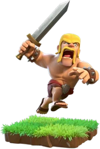

Barbarian — Clash of Clans
Updated: 26 August 2026 · By the Goblins Farm team
The first troop you ever train and, remarkably, still one of the most cost-efficient in the game. The Barbarian has no preferred target, no special ability and no tricks. It walks to the nearest building and hits it, cheaply, and in numbers that is a real strategy.
- Housing space
- 1
- Levels
- 13
- Trained in
- Barracks
- Targets
- Ground only
- Attack speed
- 1s
- Range
- Melee
- Role
- Elixir troop
- Movement
- Ground
What it does
The Barbarian follows plain nearest-target logic: it walks toward whatever building is closest and attacks it. No preference for defences, no preference for resources. That simplicity is the point, because it makes the Barbarian entirely predictable, and predictable troops are steerable troops.
Its value is what it destroys per housing space. Barbarians were once prized for being nearly free to train; troops cost nothing at all now, so what keeps them relevant is that a wave of them clears exposed buildings on a sloppy base faster than anything you would feel bad about losing. Where they fail is against splash damage, which is the eternal answer to any massed cheap troop.
How to use it
Two roles, both durable across every version of the game.
- Farming, in bulk. Paired with Archers, the classic barch army strips collectors from inactive bases in a fraction of the time a heavier army takes. See the farming loop.
- Utility. One Barbarian is the standard tool for finding a Clan Castle radius, for pulling defending troops into open ground, and for triggering a trap you suspect is there. Nothing else does those jobs so cheaply.
Deploy in a spread line, never a stack. A stack of Barbarians is one Mortar shell away from being nothing.
How to beat it
Splash damage, centrally placed, is the whole answer. Mortars, Wizard Towers and any area-damage defence delete massed Barbarians faster than they can chew through a wall. A base that keeps its splash coverage central and its storages behind compartments is functionally immune to Barbarian-led attacks, which is why they are a farming troop rather than a war one.
Stats by level
| Level | Hitpoints | DPS | Research cost | Research time | Town Hall |
|---|---|---|---|---|---|
| 1 | 45 | 9 | — | — | 1 |
| 2 | 54 | 12 | 10,000 Elixir | 30 m | 3 |
| 3 | 65 | 15 | 50,000 Elixir | 1 h | 5 |
| 4 | 85 | 18 | 130,000 Elixir | 2 h | 7 |
| 5 | 105 | 23 | 300,000 Elixir | 4 h | 8 |
| 6 | 125 | 26 | 800,000 Elixir | 8 h | 9 |
| 7 | 160 | 30 | 1,000,000 Elixir | 12 h | 10 |
| 8 | 205 | 34 | 1,500,000 Elixir | 1 d | 11 |
| 9 | 230 | 38 | 2,500,000 Elixir | 1 d 12 h | 12 |
| 10 | 250 | 42 | 4,300,000 Elixir | 2 d | 14 |
| 11 | 270 | 45 | 6,000,000 Elixir | 3 d | 15 |
| 12 | 290 | 48 | 8,000,000 Elixir | 4 d | 16 |
| 13 | 310 | 51 | 24,000,000 Elixir | 12 d 12 h | 18 |
Where these numbers come from. Read from Clash of Clans' own game files, client build 18.400.21. They are exact for that build and do not reflect anything released after it, so verify in game before committing an upgrade.
Game values are read from Supercell's own game files, reproduced as fan content under Supercell's Fan Content Policy. Goblins Farm is not affiliated with, endorsed, sponsored, or specifically approved by Supercell, and Supercell is not responsible for it.
Frequently asked
Are Barbarians still worth using?
For farming, absolutely. Their damage per housing space against undefended and lightly defended buildings remains among the best in the game, and they are the standard tool for luring Clan Castle troops, which costs you nothing now that troops are free. For war attacks against real defences, no, because splash damage removes them faster than they can do work.
What is a barch army?
A farming army of mostly Barbarians and Archers, designed to strip exposed collectors from inactive bases rather than destroy a base outright. It is often still described as cheap, which is out of date: troops are free to train, so what recommends it is speed of deployment rather than price.
Keep reading
Goblins Farm is not affiliated with, endorsed by, sponsored by, or specifically approved by Supercell. Clash of Clans is a trademark of Supercell Oy. This material is unofficial fan content produced under Supercell's Fan Content Policy. Game values change with every update; always verify in-game before committing an upgrade.